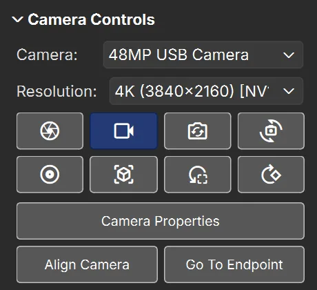
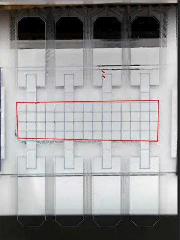

<!--
  (C) Copyright 2026-2026 Blue Ocean Technologies, Inc., Toronto, ON
  All rights reserved.

  This software is provided without warranty under the terms of the AGPL-3.0
  license included in LICENSE and may be redistributed only under the
  conditions described in the aforementioned license. The license is also
  available online at https://www.gnu.org/licenses/agpl-3.0.txt

  Thanks for using Microdrop open source!
-->
<title>Camera &amp; Alignment Tutorial</title>
<nav data-contents></nav>

<style>
ol.steps.clips li.step { grid-template-columns: minmax(0, 380px) minmax(0, 1fr); }
@media (max-width: 700px) { ol.steps.clips li.step { grid-template-columns: minmax(0, 1fr); } }
figure.step-panel figure.clip { margin: 0 0 10px; }
figure.step-panel figure.clip:last-child { margin-bottom: 0; }
figure.clip video { width: 100%; }
.clip-row { display: grid; grid-template-columns: repeat(auto-fit, minmax(200px, 1fr)); gap: 10px; margin-top: 8px; }
.clip-row figure.clip { margin: 0; }
.two { display: grid; grid-template-columns: minmax(0, 1fr) minmax(0, 1fr); gap: 14px; align-items: start; }
@media (max-width: 760px) { .two { grid-template-columns: minmax(0, 1fr); } }
kbd { white-space: nowrap; }
figure.still { margin: 10px 0 4px; }
figure.still figcaption { font-size: .88rem; color: var(--muted); margin-top: 4px; }
.still-wrap { position: relative; display: inline-block; max-width: 100%; line-height: 0; }
.still-wrap img { display: block; max-width: 100%; height: auto; border-radius: 6px; }
.still-wrap svg { position: absolute; left: 0; top: 0; width: 100%; height: 100%; overflow: visible; }
.still-wrap .ann-n { fill: #ffd400; stroke: #1d2328; stroke-width: 2; }
.still-wrap .ann-ring { fill: none; stroke: #ffd400; stroke-width: 2.5; }
.still-wrap .ann-lead { stroke: #ffd400; stroke-width: 2; }
.still-wrap .ann-nt { font: 700 14px "Segoe UI", system-ui, sans-serif; fill: #1d2328; text-anchor: middle; }
ol.legend { padding-left: 1.6em; margin: 4px 0; font-size: .88rem; color: var(--muted); }
img.glyph-shot { width: 22px; height: 22px; border-radius: 4px; vertical-align: middle; margin-right: 2px; }
.table-wrap { overflow-x: auto; }
table.small td.msg { min-width: 14em; }
table.small td { overflow-wrap: anywhere; }
.align-grid { display: grid; grid-template-columns: minmax(0, 1fr) minmax(0, 1fr); gap: 12px; }
@media (max-width: 640px) { .align-grid { grid-template-columns: minmax(0, 1fr); } }
.pane-title { font-weight: 700; font-size: .88rem; margin: 0 0 4px; color: var(--ink); }
svg.cam { display: block; width: 100%; height: auto; border-radius: 6px; touch-action: none; user-select: none; }
svg.cam .frame-bg { fill: #24282c; }
svg.cam .plate { fill: #cfd3d6; stroke: #8f979d; stroke-width: .6; }
svg.cam .cell { fill: #e6e9eb; stroke: #9aa3a9; stroke-width: .5; }
svg.cam .res { fill: #d9dde0; stroke: #9aa3a9; stroke-width: .5; }
svg.cam .notch { fill: #6b7680; }
svg.cam .drop { fill: #3fa65a; fill-opacity: .75; }
svg.cam .outline { fill: none; stroke: var(--accent); stroke-width: 1.1; }
svg.cam .quad { fill: none; stroke: #ffa000; stroke-width: 1.6; }
svg.cam .dot { fill: #ff6400; stroke: #ffffff; stroke-width: 1.4; cursor: grab; }
svg.cam .dot.active { stroke: #ff6400; stroke-width: 3; }
svg.cam .dotn { fill: #ff6400; font-size: 11px; font-weight: 700; pointer-events: none; }
svg.cam .snap { fill: #00e5ff; fill-opacity: .6; }
svg.cam .snap-ring { fill: none; stroke: #00e5ff; stroke-opacity: .5; stroke-dasharray: 3 3; }
svg.cam .label-dark { fill: #ffffff; font-size: 10px; }
.orient-grid { display: grid; grid-template-columns: minmax(0, 1fr) minmax(0, 1fr); gap: 12px; max-width: 560px; }
</style>

<header data-hero>
  <h1>Camera &amp; Alignment</h1>
  <p>MicroDrop can show a live camera picture of the chip under the electrode outlines, so you click right on the liquid
  you see. This tutorial covers the <strong>Camera Controls</strong> section of the Device Viewer side panel: choosing a camera,
  taking pictures and videos, and lining the camera picture up with the chip drawing.</p>
  <p>The short clips are real screen recordings; they play when they scroll into view. The interactive figures let you
  try alignment without a camera.</p>
</header>

<!-- ============================================================ -->
<section data-part id="overview">
<h2>Overview</h2>
<p class="intro">Alignment tells MicroDrop where the chip sits in the camera picture. You do the careful part once per chip
design: mark four corners on a camera frame and the same four corners on the drawing. MicroDrop saves the drawing's corners
as the device's <a href="#endpoint">endpoint</a>, so every later alignment of that device is a few drags and one click.</p>

<div class="two">
<figure class="still">
<div class="still-wrap"><svg viewBox="0 0 460 420" aria-hidden="true"><circle cx="34" cy="175" r="10" class="ann-n"/><text x="34" y="179" class="ann-nt">1</text><circle cx="141" cy="175" r="10" class="ann-n"/><text x="141" y="179" class="ann-nt">2</text><circle cx="249" cy="175" r="10" class="ann-n"/><text x="249" y="179" class="ann-nt">3</text><circle cx="354" cy="175" r="10" class="ann-n"/><text x="354" y="179" class="ann-nt">4</text><circle cx="34" cy="238" r="10" class="ann-n"/><text x="34" y="242" class="ann-nt">5</text><circle cx="141" cy="238" r="10" class="ann-n"/><text x="141" y="242" class="ann-nt">6</text><circle cx="249" cy="238" r="10" class="ann-n"/><text x="249" y="242" class="ann-nt">7</text><circle cx="354" cy="238" r="10" class="ann-n"/><text x="354" y="242" class="ann-nt">8</text><circle cx="40" cy="320" r="10" class="ann-n"/><text x="40" y="324" class="ann-nt">9</text><circle cx="40" cy="383" r="10" class="ann-n"/><text x="40" y="387" class="ann-nt">10</text><circle cx="252" cy="383" r="10" class="ann-n"/><text x="252" y="387" class="ann-nt">11</text></svg></div>
<figcaption>The <span class="ui">Camera Controls</span> section, camera on. Below <span class="ui">Camera</span> and
<span class="ui">Resolution</span>:
<ol class="legend"><li>Capture Image</li><li>Camera On / Camera Off</li><li>Refresh Camera List</li><li>Rotate Camera</li><li>Start Recording Video</li><li>Align Camera Perspective</li><li>Reset Camera Perspective</li><li>Rotate Device</li><li>Camera Properties</li><li>Align Camera</li><li>Go To Endpoint</li></ol>
The <a href="#part-icons">icon table</a> explains each one.</figcaption>
</figure>
<div>
<p>Two tools move the camera picture:</p>
<ul class="uses">
  <li><strong>Align Camera</strong> opens the <strong>Camera Alignment</strong> window: a camera frame and the chip drawing
  side by side, each with four numbered dots. This is the main workflow and the one the walkthrough follows.</li>
  <li><i data-glyph="ICON_VIEW_3D" data-inline data-label="Align Camera Perspective"></i> <em>Align Camera Perspective</em>
  puts handles straight on the Device Viewer, for touching up by eye. See <a href="#part-manual">Fine-tune on the device
  view</a>.</li>
</ul>
<p>Pictures and videos go into the current experiment's folder; see <a href="#part-files">Where files go</a>.</p>
<p>The camera section sits in the side panel to the right of the Device Viewer. If the panel is hidden, click the
<i data-glyph="chevron_right" data-inline data-label="Reveal Hidden Controls"></i> strip at the picture's right edge; click
the <span class="ui">Camera Controls</span> heading to fold the section open.</p>
</div>
</div>
</section>

<!-- ============================================================ -->
<section data-part id="walkthrough">
<h2>Quick walkthrough</h2>
<p class="intro">From a camera that is plugged in to a picture that lines up with the electrodes. The first alignment of a
chip design takes a few minutes; later ones take seconds.</p>
<ol class="steps clips">
  <li class="step">
    <figure class="step-panel"><div class="still-wrap"></div></figure>
    <div class="step-text"><h4><span class="step-n">1</span>Pick the camera and switch it on</h4>
    <p>In <span class="ui">Camera Controls</span>, choose your camera in <span class="ui">Camera</span>. Not listed? Plug it in and
    click <i data-glyph="flip_camera_ios" data-inline data-label="Refresh Camera List"></i> <em>Refresh Camera List</em>.</p>
    <p>Choose a <span class="ui">Resolution</span>. Each entry reads like <code>FHD (1920x1080) [NV12] @ 30 fps</code>: size,
    pixel format and frame rate. Full HD (FHD) is a good start; larger sizes cost speed (see <a href="#resolution">Resolution</a>).</p>
    <p>Click <i data-glyph="videocam_off" data-inline data-label="Camera Off"></i> to switch the camera on. The button turns to
    <i data-glyph="videocam" data-inline data-on data-label="Camera On"></i> and the live picture appears under the outlines.</p></div>
  </li>
  <li class="step">
    <figure class="step-panel">
      <figure class="clip"><video data-clip muted loop playsinline controls preload="metadata" width="640" height="360" poster="camera_alignment_media/open-alignment.webp" aria-label="Clicking Align Camera opens the Camera Alignment window"><source src="camera_alignment_media/open-alignment.webm" type="video/webm"></video>
      <figcaption>Align Camera opens the window: camera frame left, drawing right.</figcaption></figure>
      <figure class="clip"><video data-clip muted loop playsinline controls preload="metadata" width="540" height="551" poster="camera_alignment_media/show-corners.webp" aria-label="Clicking the eye button shows cyan corner markers on the camera frame"><source src="camera_alignment_media/show-corners.webm" type="video/webm"></video>
      <figcaption>The eye button marks every corner a dot can snap to (cyan).</figcaption></figure>
    </figure>
    <div class="step-text"><h4><span class="step-n">2</span>Open Camera Alignment and show the corners</h4>
    <p>Click <span class="ui">Align Camera</span>. The <strong>Camera Alignment</strong> window opens with a still frame from
    the camera on the left (<span class="ui">Device Outline</span>) and the chip drawing on the right
    (<span class="ui">Endpoint — <em>device name</em></span>).</p>
    <p>Above the camera frame, click <i data-glyph="ICON_VISIBILITY_OFF" data-inline data-label="Show every corner the dots can snap onto"></i>
    <em>Show every corner the dots can snap onto</em>. Small cyan marks appear on the corners MicroDrop found in the frame.</p>
    <p>Black frame and an orange "No camera frame" message? The camera was off; see
    <a href="#part-trouble">When something goes wrong</a>.</p></div>
  </li>
  <li class="step">
    <figure class="step-panel">
      <figure class="clip"><video data-clip muted loop playsinline controls preload="metadata" width="540" height="551" poster="camera_alignment_media/snap-dots.webp" aria-label="Dragging the four orange dots onto the corners of the electrode area; they snap onto the cyan corners, and the view zooms in for precision"><source src="camera_alignment_media/snap-dots.webm" type="video/webm"></video>
      <figcaption>Drag each dot onto a corner of the electrode area; it snaps to the nearest cyan mark. Scroll to zoom in.</figcaption></figure>
    </figure>
    <div class="step-text"><h4><span class="step-n">3</span>Put the four camera dots on the chip</h4>
    <p>Drag the four orange dots onto four corners of the electrode area in the camera frame. Pick corners you can also find on
    the drawing, such as the outer corners of the electrode grid.</p>
    <p>A dot dropped near a cyan mark jumps onto it (<a href="#snap-radius">Snap radius</a>). Scroll the mouse wheel to zoom in
    for precision, and drag the picture (not a dot) to pan. <i data-glyph="ICON_FIT_SCREEN" data-inline data-label="Fit the image in the view"></i>
    fits the whole frame again.</p>
    <p>The dots are numbered <strong>1 to 4</strong>. Remember which corner has which number: the drawing's dots must follow
    the same order.</p></div>
  </li>
  <li class="step">
    <figure class="step-panel">
      <figure class="clip"><video data-clip muted loop playsinline controls preload="metadata" width="540" height="551" poster="camera_alignment_media/rotate-drawing.webp" aria-label="Clicking rotate above the drawing turns it a quarter turn at a time"><source src="camera_alignment_media/rotate-drawing.webm" type="video/webm"></video>
      <figcaption>Rotate turns the drawing a quarter turn per click.</figcaption></figure>
    </figure>
    <div class="step-text"><h4><span class="step-n">4</span>Turn both sides the same way</h4>
    <p>Make the camera frame and the drawing face the same way, so the dots are easy to match. Each side has
    <i data-glyph="ICON_ROTATE_90_CW" data-inline data-label="Rotate a quarter turn clockwise"></i> <em>Rotate a quarter turn
    clockwise</em>; the camera side also has 
    <em>Mirror the camera image left–right</em> and 
    <em>top–bottom</em>. The dots move with the picture.</p>
    <p>Want to turn only the dots and leave the picture still? Switch on <i data-glyph="ICON_LOCK_OPEN" data-inline data-label="Lock"></i>
    the <a href="#image-lock">image lock</a> first (it shows <i data-glyph="ICON_LOCK" data-inline data-on></i> while on).</p>
    <p>Turning and mirroring here only change how the two sides are <em>shown</em>, so you can compare them. They are not
    saved; what counts is which dot sits on which corner. Try it in the <a href="#orientation">orientation puzzle</a>.</p>
    <div class="clip-row">
      <figure class="clip"><video data-clip muted loop playsinline controls preload="metadata" width="540" height="551" poster="camera_alignment_media/rotate-camera.webp" aria-label="Clicking rotate above the camera frame turns the frame; the dots move with it"><source src="camera_alignment_media/rotate-camera.webm" type="video/webm"></video>
      <figcaption>The camera frame turns too, and its dots ride along.</figcaption></figure>
      <figure class="clip"><video data-clip muted loop playsinline controls preload="metadata" width="540" height="551" poster="camera_alignment_media/lock-dots.webp" aria-label="With the lock switched on, rotate turns only the orange frame and its dots while the drawing stays still"><source src="camera_alignment_media/lock-dots.webm" type="video/webm"></video>
      <figcaption>Lock on (highlighted): Rotate turns only the dots and frame; the drawing stays put.</figcaption></figure>
    </div></div>
  </li>
  <li class="step">
    <figure class="step-panel">
      <figure class="clip"><video data-clip muted loop playsinline controls preload="metadata" width="540" height="551" poster="camera_alignment_media/endpoint-dots.webp" aria-label="Dragging the drawing's four dots onto the same four corners of the electrode grid"><source src="camera_alignment_media/endpoint-dots.webm" type="video/webm"></video>
      <figcaption>The drawing's dots go on the same corners, in the same order. The dot under the pointer lights up in both panes.</figcaption></figure>
    </figure>
    <div class="step-text"><h4><span class="step-n">5</span>Place the drawing's dots: the endpoint</h4>
    <p>On the right, drag the drawing's four dots onto the <strong>same four corners</strong> you used in the camera frame,
    with the same numbers: dot 1 on the same corner in both panes, and so on.</p>
    <p>Hovering or pressing a dot highlights the dot with the same number in the other pane, so you can check the pairs.</p>
    <p>These four drawing positions are the device's <a href="#endpoint">endpoint</a>. Once saved, they are kept for this chip
    design, and the window opens with them next time.</p></div>
  </li>
  <li class="step">
    <figure class="step-panel">
      <figure class="clip"><video data-clip muted loop playsinline controls preload="metadata" width="582" height="477" poster="camera_alignment_media/confirm-alignment.webp" aria-label="Clicking Confirm Alignment, the camera picture behind the window glides into place, then the window is closed and the picture lines up with the outlines"><source src="camera_alignment_media/confirm-alignment.webm" type="video/webm"></video>
      <figcaption>Confirm Alignment: the picture glides into place behind the window. Close the window to see the result.</figcaption></figure>
    </figure>
    <div class="step-text"><h4><span class="step-n">6</span>Confirm, then check</h4>
    <p>Click the green <span class="ui">Confirm Alignment</span>. MicroDrop saves the endpoint (the status bar says
    <span class="ui">Saved camera-alignment endpoint for <em>device</em></span>), then glides the camera picture so the four
    camera corners land on the four drawing corners.</p>
    <p>The window stays open so you can adjust and confirm again. Close it with its <strong>×</strong> when done.</p>
    <p>Check that the outlines sit on the real electrode edges everywhere. If an edge is off, open
    <span class="ui">Align Camera</span> again and nudge the dots, or touch up on the
    <a href="#part-manual">device view</a>.</p></div>
  </li>
  <li class="step">
    <figure class="step-panel"><svg viewBox="0 0 300 170" role="img" aria-label="Schematic: the capture button, then the status bar message Image Captured with a link to the file in the captures folder"><rect x="0.5" y="0.5" width="299" height="169" rx="6" fill="var(--surface)" stroke="var(--line)"/><rect x="14" y="16" width="56" height="34" rx="4" fill="var(--surface-2)" stroke="var(--line)"/><use href="#ic-camera" x="30" y="21" width="24" height="24" style="fill:var(--ink)"/><rect x="80" y="16" width="56" height="34" rx="4" fill="var(--surface-2)" stroke="var(--line)"/><use href="#ic-album" x="96" y="21" width="24" height="24" style="fill:var(--ink)"/><text x="14" y="70" style="font-size:10px">captures/  free_mode_2026_11_11-16_19_11.png</text><text x="14" y="86" style="font-size:10px">recordings/  free_mode_2026_11_11-16_20_02.mp4</text><rect x="8" y="128" width="284" height="28" rx="3" fill="var(--surface-2)" stroke="var(--line)"/><text x="16" y="146" style="font-size:9.5px;fill:var(--ink)">Image Captured: </text><text x="94" y="146" style="font-size:9.5px;fill:var(--accent);text-decoration:underline">…/captures/free_mode_…png</text><text x="14" y="118" style="font-size:9px">Status bar, for 5 seconds:</text></svg></figure>
    <div class="step-text"><h4><span class="step-n">7</span>Take a picture or a video</h4>
    <p>Click <i data-glyph="camera" data-inline data-label="Capture Image"></i> <em>Capture Image</em> to save the camera picture as
    the Device Viewer shows it, straightened by the alignment (without the electrode outlines), as a PNG.</p>
    <p>Click <i data-glyph="album" data-inline data-label="Start Recording Video"></i> <em>Start Recording Video</em> to start a
    video; the button stays highlighted while it records. Click it again to stop.</p>
    <p>Both work with the camera off too: MicroDrop switches it on for the shot and off again afterwards. The status bar shows
    <span class="ui">Image Captured:</span> or <span class="ui">Video Captured:</span> with a link to the file for a few
    seconds. <a href="#part-files">Where files go</a> lists the folders.</p></div>
  </li>
</ol>

<h3 id="next-time">Next time: the same chip design</h3>
<p>MicroDrop remembers the alignment between sessions, so if neither camera nor chip holder moved, the picture still lines
up after a restart. When something did move:</p>
<ol class="legend" style="font-size:1rem;color:var(--ink)">
  <li>Click <span class="ui">Align Camera</span>. The drawing side opens with the saved endpoint already in place.</li>
  <li>Drag the camera dots onto the same four corners in the frame. The window grabs a fresh frame when it opens;
  <i data-glyph="ICON_PHOTO_CAMERA" data-inline data-label="Recapture"></i> grabs another if the chip moved since.</li>
  <li>Click <span class="ui">Confirm Alignment</span>. No need to touch the drawing side.</li>
</ol>
<p><span class="ui">Go To Endpoint</span> in <span class="ui">Camera Controls</span> repeats only the last part: it glides the
corner points currently marked on the camera picture onto the saved endpoint. Use it after dragging the handles on the
device view by hand, to snap them back, or after staging new camera points with
<i data-glyph="ICON_SAVE" data-inline data-label="Use just these outline points"></i> in the Device Outline pane.</p>
</section>

<!-- ============================================================ -->
<section data-part id="part-icons">
<h2>Buttons and icons</h2>
<p class="intro">Hover over a button in MicroDrop to see the tooltip quoted here. Highlighted icons show a button switched on.</p>

<section data-term id="tb-camera" data-where="Device Viewer side panel ▸ Camera Controls">
  <h3>Camera Controls</h3>
  <div class="table-wrap">
  <table class="small icons-table">
    <thead><tr><th>Icon</th><th>Tooltip</th><th>What it does</th></tr></thead>
    <tbody>
      <tr><td class="icons"><i data-glyph="camera"></i></td><td class="lbl">Capture Image</td><td>Saves a PNG of the aligned camera
      picture to the experiment's <code>captures</code> folder. Turns the camera on for a moment if it is off.</td></tr>
      <tr><td class="icons"><i data-glyph="videocam_off"></i><i data-glyph="videocam" data-on></i></td><td class="lbl">Camera Off / Camera On</td><td>Switches
      the live picture off or on; the tooltip says the current state. Asks first while a recording runs.</td></tr>
      <tr><td class="icons"><i data-glyph="flip_camera_ios"></i></td><td class="lbl">Refresh Camera List</td><td>Looks for cameras again,
      after you plug one in or out.</td></tr>
      <tr><td class="icons"><i data-glyph="cameraswitch"></i></td><td class="lbl">Rotate Camera</td><td>Turns only the camera picture a
      quarter turn about its centre; the outlines stay. Key: <kbd>Shift</kbd>+<kbd>R</kbd>. See <a href="#rotate">Rotate Camera vs Rotate Device</a>.</td></tr>
      <tr><td class="icons"><i data-glyph="album"></i><i data-glyph="album" data-on></i></td><td class="lbl">Start Recording Video</td><td>Starts
      a recording, highlighted while it runs; click again to stop. Saved to the experiment's <code>recordings</code> folder.</td></tr>
      <tr><td class="icons"><i data-glyph="ICON_VIEW_3D"></i></td><td class="lbl">Align Camera Perspective</td><td>Puts four corner
      handles on the Device Viewer to adjust the picture by hand; the button turns green while they are shown. Click again to
      finish. See <a href="#part-manual">Fine-tune on the device view</a>.</td></tr>
      <tr><td class="icons"><i data-glyph="reset_focus"></i></td><td class="lbl">Reset Camera Perspective</td><td>Throws away the
      alignment: the picture goes back to its unaligned size and place. The saved endpoint is kept.</td></tr>
      <tr><td class="icons"><i data-glyph="rotate_90_degrees_cw"></i></td><td class="lbl">Rotate Device</td><td>Turns the whole view,
      drawing and picture together, a quarter turn clockwise. Key: <kbd>R</kbd>.</td></tr>
      <tr><td class="icons"><span class="ui">Camera Properties</span></td><td class="lbl">Focus, exposure and image controls of the selected camera</td><td>Opens
      the <a href="#camera-properties">Camera Properties</a> window. Shown only when the camera has such controls.</td></tr>
      <tr><td class="icons"><span class="ui">Align Camera</span></td><td class="lbl">Place this device's endpoint on the SVG and drag the corner dots onto its outline in a captured camera frame</td><td>Opens
      the Camera Alignment window (walkthrough steps 2 to 6).</td></tr>
      <tr><td class="icons"><span class="ui">Go To Endpoint</span></td><td class="lbl">Glide the marked points onto this device's saved endpoint</td><td>See
      <a href="#go-to-endpoint">Go To Endpoint</a>.</td></tr>
    </tbody>
  </table>
  </div>
</section>

<section data-term id="tb-alignment" data-where="Camera Alignment window">
  <h3>Camera Alignment window</h3>
  <figure class="still">
  <div class="still-wrap"><svg viewBox="0 0 898 507" aria-hidden="true"><circle cx="84" cy="36" r="10" class="ann-n"/><text x="84" y="40" class="ann-nt">1</text><circle cx="260" cy="36" r="11" class="ann-ring"/><circle cx="260" cy="19" r="10" class="ann-n"/><text x="260" y="23" class="ann-nt">2</text><circle cx="341" cy="19" r="10" class="ann-n"/><text x="341" y="23" class="ann-nt">3</text><circle cx="570" cy="36" r="10" class="ann-n"/><text x="570" y="40" class="ann-nt">4</text><circle cx="757" cy="36" r="11" class="ann-ring"/><circle cx="757" cy="19" r="10" class="ann-n"/><text x="757" y="23" class="ann-nt">5</text><circle cx="813" cy="19" r="10" class="ann-n"/><text x="813" y="23" class="ann-nt">6</text><circle cx="244" cy="185" r="9" class="ann-ring"/><path d="M277 216L250 191" class="ann-lead"/><circle cx="285" cy="224" r="10" class="ann-n"/><text x="285" y="228" class="ann-nt">7</text><circle cx="730" cy="164" r="9" class="ann-ring"/><path d="M765 197L736 170" class="ann-lead"/><circle cx="773" cy="204" r="10" class="ann-n"/><text x="773" y="208" class="ann-nt">8</text><circle cx="884" cy="245" r="10" class="ann-ring"/><circle cx="884" cy="224" r="10" class="ann-n"/><text x="884" y="228" class="ann-nt">9</text><circle cx="377" cy="487" r="10" class="ann-n"/><text x="377" y="491" class="ann-nt">10</text></svg></div>
  <figcaption>
  <ol class="legend"><li><span class="ui">Device Outline</span>: a still camera frame. Hover the title for the instructions.</li><li>Show every corner the dots can snap onto (on here).</li><li>The rest of the camera side's buttons (table below).</li><li><span class="ui">Endpoint — 90_pin_array</span>: the drawing of the loaded device.</li><li>The drawing side's snap-corner switch (off here).</li><li>The rest of the drawing side's buttons.</li><li>Camera dots 1 to 4 (here turned with the frame).</li><li>The drawing's dots, on the same corners.</li><li>Opens the Overlay Settings sidebar.</li><li><span class="ui">Confirm Alignment</span>.</li></ol></figcaption>
  </figure>
  <div class="table-wrap">
  <table class="small icons-table">
    <thead><tr><th>Icon</th><th>Tooltip</th><th>Where</th><th>What it does</th></tr></thead>
    <tbody>
      <tr><td class="icons"><i data-glyph="ICON_VISIBILITY_OFF"></i><i data-glyph="ICON_VISIBILITY" data-on></i></td><td class="lbl">Show every corner the dots can snap onto</td><td>both</td><td>Shows
      the <a href="#snap-corners">snap corners</a> as small cyan marks.</td></tr>
      <tr><td class="icons"><i data-glyph="ICON_FIT_SCREEN"></i></td><td class="lbl">Fit the image in the view</td><td>both</td><td>Undoes
      zooming and panning.</td></tr>
      <tr><td class="icons"><i data-glyph="ICON_LOCK_OPEN"></i><i data-glyph="ICON_LOCK" data-on></i></td><td class="lbl">Lock the camera image: rotate and flip move only the reference grid<br>Lock the device image: rotate move only the reference grid</td><td>both</td><td>The
      <a href="#image-lock">image lock</a>.</td></tr>
      <tr><td class="icons"><i data-glyph="ICON_ROTATE_90_CW"></i></td><td class="lbl">Rotate a quarter turn clockwise</td><td>both</td><td>Turns
      the picture and its dots (or only the dots, when locked).</td></tr>
      <tr><td class="icons"></td><td class="lbl">Mirror the camera image left–right</td><td>camera</td><td>Flips
      the frame as in a mirror; the dots follow.</td></tr>
      <tr><td class="icons"></td><td class="lbl">Mirror the camera image top–bottom</td><td>camera</td><td>Flips
      the frame upside down; the dots follow.</td></tr>
      <tr><td class="icons"><i data-glyph="ICON_PHOTO_CAMERA"></i></td><td class="lbl">Recapture — grab a fresh frame from the camera</td><td>camera</td><td>Replaces
      the still frame with a new one and finds its corners again. The dots stay where you put them.</td></tr>
      <tr><td class="icons"><i data-glyph="ICON_RESTORE"></i></td><td class="lbl">Reset the dots to the default grid</td><td>camera</td><td>Puts
      the dots back where they start and the frame back unturned and unlocked.</td></tr>
      <tr><td class="icons"><i data-glyph="ICON_RESTORE"></i></td><td class="lbl">Clear the saved endpoint for this device and reset the dots</td><td>drawing</td><td>Asks
      first (<span class="ui">Reset Endpoint</span>), then deletes this device's saved endpoint.</td></tr>
      <tr><td class="icons"><i data-glyph="ICON_SAVE"></i></td><td class="lbl">Use just these outline points (stage them on the feed)</td><td>camera</td><td>Marks
      the four camera points on the Device Viewer and shows their handles, without saving an endpoint. Follow with
      <span class="ui">Go To Endpoint</span>.</td></tr>
      <tr><td class="icons"><i data-glyph="ICON_SAVE"></i></td><td class="lbl">Save just this device's endpoint</td><td>drawing</td><td>Saves
      the endpoint only; nothing moves on the Device Viewer.</td></tr>
      <tr><td class="icons"><i data-glyph="ICON_CHEVRON_LEFT"></i><i data-glyph="ICON_CHEVRON_RIGHT"></i></td><td class="lbl">Hide or show the snap and quad-style settings sidebar</td><td>right edge</td><td>Opens
      or closes <a href="#part-overlay">Overlay Settings</a>.</td></tr>
      <tr><td class="icons"><span class="ui">Confirm Alignment</span></td><td class="lbl">Save the endpoint, use the marked outline points, and run Go To Endpoint</td><td>bottom</td><td>Greyed
      out until the camera side has a real frame. See <a href="#confirm">Confirm Alignment</a>.</td></tr>
    </tbody>
  </table>
  </div>
  <p>In both panes: scroll to zoom about the pointer; drag anywhere that is not a dot to pan.</p>
</section>
</section>

<!-- ============================================================ -->
<section data-part id="part-manual">
<h2>Fine-tune on the device view</h2>
<p class="intro">For small corrections you can drag the camera picture's corners right on the Device Viewer, without the
alignment window.</p>
<div class="two">
<figure class="still">
<div class="still-wrap"><svg viewBox="0 0 358 476" aria-hidden="true"></svg></div>
<figcaption>The thin red frame on the Device Viewer while <em>Align Camera Perspective</em> is on: drag a corner and the
picture stretches with it.</figcaption>
</figure>
<div>
<ol class="legend" style="font-size:1rem;color:var(--ink)">
  <li>Click <i data-glyph="ICON_VIEW_3D" data-inline data-label="Align Camera Perspective"></i> <em>Align Camera
  Perspective</em>. If the picture is already aligned, the button turns green and a red frame shows the four marked
  points. The status bar says <span class="ui">Drag vertices to align with device outline</span>.</li>
  <li>Drag a red corner. The camera picture stretches so that point moves with it; the electrode outlines stay put.</li>
  <li>Click the button again to finish.</li>
</ol>
<p>Nothing aligned yet? Then the status bar says <span class="ui">Select 4 points on image</span>: click four spots on the
camera picture, such as the chip's corners. After the fourth the red frame appears and you drag its corners onto the
matching places of the outlines.</p>
<p>Right-click the view while the handles are shown for two more choices: <span class="ui">Reset Reference Rectangle</span>
(start again by clicking four new points) and <span class="ui">Edit Reference Rect</span> (tooltip: <em>Edit Reference
Rectangle without changing camera perspective</em>), which moves the red points without moving the picture, for when you
want to pick better reference spots first.</p>
</div>
</div>
</section>

<!-- ============================================================ -->
<section data-part id="part-terms">
<h2>Alignment terms</h2>
<p class="intro">What the words in the alignment window mean, and the values MicroDrop starts with.</p>

<section data-term id="perspective" data-where="what alignment computes">
  <h3>Perspective correction (homography)</h3>
  <p>The stretch that turns the camera's slanted view of the chip into a straight, top-down picture that fits the drawing.</p>
  <div data-what><p>Four point pairs (a camera spot and the drawing spot it belongs on) fix one "projective" stretch: it can
  move, turn, scale and tilt the picture, and keeps straight lines straight. Mathematicians call it a homography.</p></div>
  <div data-when><p>Every alignment computes one; you never type numbers.</p></div>
  <div data-read><p>Good alignment: outlines sit on the real electrode edges across the whole chip, not just near the dots.
  Pick dots far apart (the outer corners) for the best result.</p></div>
  <div data-typical><p>Kept between sessions; reset with <i data-glyph="reset_focus" data-inline></i> <em>Reset Camera Perspective</em>.</p></div>
  <figure data-demo="align" aria-label="Interactive alignment: drag four dots on a camera frame and watch the corrected picture">
    <div class="controls">
      <label><input type="checkbox" id="al-snap-show" checked> Show snap corners</label>
      <label>Snap radius <input type="range" id="al-snap" min="0" max="200" step="10" value="100"></label><output for="al-snap"></output>
      <button type="button" id="al-reset">Reset the dots</button>
      <button type="button" id="al-solve">Show me</button>
    </div>
    <div class="align-grid">
      <div><p class="pane-title">Device Outline (camera frame)</p><svg class="cam" id="al-cam" viewBox="0 0 320 240" role="img" aria-label="Camera frame with a slanted chip and four draggable numbered dots"></svg></div>
      <div><p class="pane-title">Device Viewer (result)</p><svg class="cam" id="al-out" viewBox="0 0 320 240" role="img" aria-label="The corrected camera picture under the electrode outlines"></svg></div>
    </div>
    <p class="status" id="al-status" aria-live="polite"></p>
    <figcaption>Drag the orange dots onto the four outer corners of the electrode grid: 1 top-left, 2 top-right, 3
    bottom-right, 4 bottom-left. The right side shows the camera picture stretched so the dots land on the grid's corners
    in the drawing (the coloured outlines). Swap two dots to see a mismatched order; <em>Show me</em> places them for you.</figcaption>
  </figure>
</section>

<section data-term id="reference-grid" data-where="orange frame in both panes">
  <h3>Reference grid</h3>
  <p>The orange four-sided frame joining the four dots; the image lock's tooltip calls it the reference grid.</p>
  <div data-what><p>A visual guide: it shows the shape the four dots make, so a crossed or twisted order is easy to spot.</p></div>
  <div data-read><p>A clean four-sided shape in both panes means the dots go round the same way. A bow-tie shape means two
  dots are swapped.</p></div>
  <div data-typical><p>Orange (<code>#ffa000</code>), 3 px wide; see <a href="#frame-width">Frame width</a>.</p></div>
</section>

<section data-term id="numbered-dots" data-where="both panes">
  <h3>Numbered dots (1–4)</h3>
  <p>The four handles you drag. Dot 1 in the camera frame belongs on the same corner as dot 1 on the drawing.</p>
  <div data-what><p>A fresh set starts numbered from the top-left, clockwise: 1 top-left, 2 top-right, 3 bottom-right, 4
  bottom-left. On the drawing side the numbers are tidied up the same way when the endpoint is saved.</p></div>
  <div data-when><p>Always: the pairs are what the alignment is made of.</p></div>
  <div data-read><p>The number sits beside each dot, in the dot's colour. Hover or press a dot: the dot with the same number
  lights up in the other pane too. If you turn or mirror the camera frame, its dots move with it, so dot 1 may no longer be
  top-left; that is fine as long as both panes agree.</p></div>
  <div data-typical><p>When the orders differ, <span class="ui">Confirm Alignment</span> asks before going on (see
  <a href="#part-trouble">When something goes wrong</a>).</p></div>
</section>

<section data-term id="snap-corners" data-where="eye button above each pane">
  <h3>Snap corners</h3>
  <p>The spots a dot jumps onto when you let go of it nearby.</p>
  <div data-what><p>On the camera side, corners MicroDrop finds in the frame by looking for sharp light/dark corners. On the
  drawing side, every corner of every electrode outline.</p></div>
  <div data-when><p>Leave them on while placing dots; switch the cyan marks off with the eye button if they clutter the view.
  Snapping works whether the marks are shown or not.</p></div>
  <div data-read><p>Cyan marks. Dirt, bubbles and the chip's edge make corners too; zoom in and check the dot landed on the
  corner you meant. <i data-glyph="ICON_PHOTO_CAMERA" data-inline></i> Recapture finds them again on a fresh frame.</p></div>
  <div data-typical><p>Marks hidden when the window opens.</p></div>
</section>

<section data-term id="image-lock" data-where="lock button above each pane">
  <h3>Image lock</h3>
  <p>Keeps the picture still while Rotate (and, on the camera side, Mirror) moves only the dots.</p>
  <div data-what><p>With the lock on, rotating turns the four dots about their middle; the picture, its snap corners and its
  orientation stay as they are.</p></div>
  <div data-when><p>When the picture already faces the right way but your dots went round in the wrong order: one or more
  quarter turns renumber them without dragging.</p></div>
  <div data-read><p><i data-glyph="ICON_LOCK" data-inline data-on></i> highlighted: locked.
  <i data-glyph="ICON_LOCK_OPEN" data-inline></i>: picture and dots move together.</p></div>
  <div data-typical><p>Off. Greyed out until the pane has a picture. Not saved: closing the window forgets it, and so does
  the camera side's reset button.</p></div>
</section>

<section data-term id="endpoint" data-where="Endpoint pane">
  <h3>Endpoint</h3>
  <p>Where the four camera points belong on the drawing, saved once per device (chip design).</p>
  <div data-what><p>Four positions on the device drawing. MicroDrop keeps one set per device, under the device file's name,
  in <code>camera_endpoints.json</code> (see <a href="#part-files">Where files go</a>).</p></div>
  <div data-when><p>Set it carefully the first time you use a chip design; afterwards leave it alone unless it is wrong.</p></div>
  <div data-read><p>The drawing side's title names the device: <span class="ui">Endpoint — 90_pin_array</span>.
  With no saved endpoint, the dots start just inside the drawing's edges.</p></div>
  <div data-typical><p>None until you save one. Saved by <span class="ui">Confirm Alignment</span> or the drawing side's
  <i data-glyph="ICON_SAVE" data-inline></i>; deleted by its <i data-glyph="ICON_RESTORE" data-inline></i>.</p></div>
</section>

<section data-term id="outline-points" data-where="Device Outline pane">
  <h3>Outline points</h3>
  <p>The four camera dots: where the chosen corners are in this camera frame.</p>
  <div data-what><p>Positions in the camera picture, not saved per device: they change whenever the camera or chip moves.
  Confirming (or the camera side's <i data-glyph="ICON_SAVE" data-inline></i>) marks them on the Device Viewer as the start
  points of the next glide.</p></div>
  <div data-when><p>Every alignment.</p></div>
  <div data-typical><p>A fresh window starts them where the current alignment has them, or on a grid inside the frame.</p></div>
</section>

<section data-term id="confirm" data-where="bottom of the alignment window">
  <h3>Confirm Alignment</h3>
  <p>The one button that applies everything.</p>
  <div data-what><p>In order: saves the endpoint, marks the outline points on the Device Viewer, then runs
  <a href="#go-to-endpoint">Go To Endpoint</a>.</p></div>
  <div data-when><p>After placing both sets of dots. Press it again after any correction.</p></div>
  <div data-read><p>Greyed out while the camera side has no frame. Asks first if the two dot orders differ.</p></div>
  <div data-typical><p>The window stays open afterwards; close it yourself.</p></div>
</section>

<section data-term id="go-to-endpoint" data-where="Camera Controls ▸ Go To Endpoint">
  <h3>Go To Endpoint</h3>
  <p>Glides the camera picture so the marked camera points land on the saved endpoint.</p>
  <div data-what><p>Moves the four marked points smoothly onto the endpoint over about a second and a half, stretching the
  picture as it goes, then returns to the mode you were in.</p></div>
  <div data-when><p>Runs by itself after Confirm Alignment. Click it yourself after dragging the red handles on the device view,
  or after staging outline points with the camera side's <i data-glyph="ICON_SAVE" data-inline></i>.</p></div>
  <div data-read><p>Needs a saved endpoint and four marked points; otherwise it says which is missing.</p></div>
</section>

<section data-term id="rotate" data-where="Camera Controls, keys R and Shift+R">
  <h3>Rotate Camera vs Rotate Device</h3>
  <p>Two different quarter turns on the Device Viewer.</p>
  <div data-what><p><i data-glyph="cameraswitch" data-inline></i> <em>Rotate Camera</em> (<kbd>Shift</kbd>+<kbd>R</kbd>) turns
  only the camera picture about its centre; the outlines stay. <i data-glyph="rotate_90_degrees_cw" data-inline></i>
  <em>Rotate Device</em> (<kbd>R</kbd>) turns the whole view, outlines and picture together, a quarter turn clockwise.</p></div>
  <div data-when><p>Rotate Camera when the picture is turned against the drawing (it changes the alignment). Rotate Device
  when you just want to look at the chip another way round; the alignment is untouched.</p></div>
  <div data-read><p>Both are remembered for next time. The keys work with the Device Viewer selected; <kbd>F1</kbd> lists all
  its keys.</p></div>
  <div data-typical><p>Not rotated.</p></div>
</section>

<section data-term id="orientation" data-where="Device Outline: rotate and mirror">
  <h3>Orientation puzzle</h3>
  <p>A camera can show the chip turned or mirrored compared with the drawing. Practise undoing that with the window's buttons.</p>
  <figure data-demo="orient" aria-label="Rotate and mirror puzzle">
    <div class="controls">
      <button type="button" id="or-rot">Rotate a quarter turn clockwise</button>
      <button type="button" id="or-fh">Mirror left–right</button>
      <button type="button" id="or-fv">Mirror top–bottom</button>
      <button type="button" id="or-new">New puzzle</button>
    </div>
    <div class="orient-grid">
      <div><p class="pane-title">Device Outline (camera frame)</p><svg class="cam" id="or-cam" viewBox="0 0 200 200" role="img" aria-label="The camera frame, turned or mirrored"></svg></div>
      <div><p class="pane-title">Endpoint (drawing)</p><svg class="cam" id="or-dev" viewBox="0 0 200 200" role="img" aria-label="The chip drawing, upright"></svg></div>
    </div>
    <p class="status" id="or-status" aria-live="polite"></p>
    <figcaption>Make the camera frame look like the drawing: the dark notch top-left, the green droplet on the left, the
    numbers readable. Count your clicks: two mirrors equal a half turn.</figcaption>
  </figure>
</section>
</section>

<!-- ============================================================ -->
<section data-part id="part-overlay">
<h2>Overlay Settings</h2>
<p class="intro">The sidebar the <i data-glyph="ICON_CHEVRON_LEFT" data-inline></i> chevron at the alignment window's right
edge opens. It changes how the dots, frame and markers look and how far dots snap. Changes apply at once to both panes and
are saved with your preferences; <span class="ui">Reset to Defaults</span> puts every value back. These settings appear only
here, not in Edit ▸ Preferences.</p>

<section data-term id="snap-radius" data-where="Overlay Settings ▸ Snap radius (px)">
  <h3>Snap radius</h3>
  <p>How close to a snap corner you must let go of a dot for it to jump there.</p>
  <div data-what><p>A distance in screen pixels, so it covers less of the chip the further you zoom in.</p></div>
  <div data-when><p>Lower it if dots keep jumping to the wrong corner; set 0 to switch snapping off. Raise it on a large
  screen.</p></div>
  <div data-typical><p>100 px, from 0 to 200. Try it in the <a href="#perspective">alignment demo</a>.</p></div>
</section>

<section data-term id="dot-radius" data-where="Overlay Settings ▸ Dot radius (px)">
  <h3>Dot radius</h3>
  <p>The size of the four draggable dots.</p>
  <div data-when><p>Bigger for a touchscreen, smaller to see the corner under the dot.</p></div>
  <div data-read><p>The dot numbers grow with it.</p></div>
  <div data-typical><p>8 px, from 2 to 40.</p></div>
</section>

<section data-term id="frame-width" data-where="Overlay Settings ▸ Frame width (px)">
  <h3>Frame width</h3>
  <p>The line width of the orange <a href="#reference-grid">reference grid</a>.</p>
  <div data-typical><p>3 px, from 1 to 20.</p></div>
</section>

<section data-term id="corner-markers" data-where="Overlay Settings ▸ Corner marker size (px), Corner marker alpha">
  <h3>Corner marker size and alpha</h3>
  <p>How big and how see-through the cyan <a href="#snap-corners">snap-corner</a> marks are.</p>
  <div data-what><p>Size in screen pixels, the same at any zoom. Alpha is opacity: 0 invisible, 1 solid.</p></div>
  <div data-when><p>Shrink or fade them when a busy frame is covered in marks.</p></div>
  <div data-typical><p>Size 6 px (1 to 30); alpha 0.6 (0 to 1).</p></div>
</section>

<section data-term id="highlight" data-where="Overlay Settings ▸ Highlight color, Highlight alpha, Highlight size (x dot)">
  <h3>Highlight colour, alpha and size</h3>
  <p>The ring that marks the dot under the pointer, and its partner in the other pane.</p>
  <div data-what><p>A ring with a soft halo. Size is a multiple of the dot radius.</p></div>
  <div data-when><p>Make it bolder if you lose track of which dots pair up.</p></div>
  <div data-typical><p>Colour the same as the dots (<code>#ff6400</code>), alpha 1.0, size 1.7 × dot (1 to 4).</p></div>
</section>

<section data-term id="number-alpha" data-where="Overlay Settings ▸ Number alpha">
  <h3>Number alpha</h3>
  <p>How visible the 1–4 numbers beside the dots are.</p>
  <div data-read><p>0 hides the numbers; 1 is solid.</p></div>
  <div data-typical><p>1.0.</p></div>
</section>

<section data-term id="colours" data-where="Overlay Settings ▸ Frame color, Dot color, Dot ring color, Corner marker color">
  <h3>Frame, dot, dot ring and corner marker colours</h3>
  <p>Colour wells for each part of the overlay.</p>
  <div data-when><p>Change a colour that disappears against your chip or lighting, for example orange on a copper-coloured
  board.</p></div>
  <div data-typical><p>Frame orange <code>#ffa000</code>, dot <code>#ff6400</code>, dot ring white <code>#ffffff</code>, corner
  marker cyan <code>#00e5ff</code>.</p></div>
</section>
</section>

<!-- ============================================================ -->
<section data-part id="part-video">
<h2>Camera, capture and video settings</h2>
<p class="intro">The camera choices in Camera Controls and the two groups under <span class="ui">Edit ▸ Preferences ▸ Video
Settings</span>.</p>

<section data-term id="camera-list" data-where="Camera Controls ▸ Camera">
  <h3>Camera</h3>
  <p>Which camera the Device Viewer shows.</p>
  <div data-what><p>The cameras the computer reports, then cameras added by plugins (for example a fluorescence camera),
  then <span class="ui">&lt;No Camera&gt;</span>.</p></div>
  <div data-when><p>Pick <span class="ui">&lt;No Camera&gt;</span> to run without a picture; the camera, record, capture and
  Rotate Camera buttons grey out.</p></div>
  <div data-read><p>Plugin cameras cannot be recorded with Start Recording Video; the button greys out for them.</p></div>
  <div data-typical><p>The camera you used last time. If it is missing at start-up, the first one listed.</p></div>
</section>

<section data-term id="resolution" data-where="Camera Controls ▸ Resolution">
  <h3>Resolution</h3>
  <p>The picture size, pixel format and frame rate the camera delivers.</p>
  <div data-what><p>Common sizes by name: SD (640x480), HD (1280x720), FHD (1920x1080), 2K (2048x1080), QHD (2560x1440), 4K
  (3840x2160), 4K DCI (4096x2160). The last entry, <span class="ui">Show all resolutions…</span>, lists every size the camera
  offers; <span class="ui">Show common resolutions…</span> goes back.</p></div>
  <div data-when><p>Bigger shows more detail but makes streaming, recording and analysis heavier. Recording needs at least 20
  fps: pick a size with a higher rate if Recording Not Supported appears.</p></div>
  <div data-read><p>Above 1920x1080 MicroDrop warns once (<span class="ui">High resolution selected</span>); tick
  <span class="ui">Don't show this again</span> to stop it, or untick <span class="ui">Hide High Resolution Warning</span>
  in Video Settings to bring it back.</p></div>
  <div data-typical><p>Your last choice; the first time, the middle entry of the list.</p></div>
</section>

<section data-term id="camera-properties" data-where="Camera Controls ▸ Camera Properties">
  <h3>Camera Properties</h3>
  <p>A separate window with the selected camera's own controls.</p>
  <div data-what><p>A <span class="ui">Focus</span> slider (Near to Far), with <span class="ui">Auto</span> and a one-shot
  autofocus button where the camera supports them, and one slider per image control the camera has (exposure, brightness,
  contrast, …) with <span class="ui">Defaults</span>.</p></div>
  <div data-when><p>To sharpen or brighten the picture before aligning or capturing.</p></div>
  <div data-read><p>The button is hidden for cameras that offer none of these controls.</p></div>
</section>

<section data-term id="video-format" data-where="Video Settings ▸ Video Format">
  <h3>Preferred Video Format</h3>
  <p>The pixel format MicroDrop asks the camera for.</p>
  <div data-what><p><span class="ui">NV12</span> (raw, uncompressed colour) or <span class="ui">JPEG</span> (compressed by the
  camera). With <span class="ui">Strictly Use Only Preferred Video Format?</span> ticked, the Resolution list offers only that
  format.</p></div>
  <div data-when><p>Switch to JPEG if a USB camera only reaches high resolutions or frame rates in JPEG.</p></div>
  <div data-read><p>If the camera has no format of that kind, MicroDrop says <span class="ui">Preferred format NV12 not
  supported.</span> (or JPEG) and lists the others instead.</p></div>
  <div data-typical><p>NV12 on Windows and macOS, JPEG on Linux; strict on.</p></div>
</section>

<section data-term id="recorder" data-where="Video Settings ▸ Video Recording ▸ Recording Engine">
  <h3>Recording Engine</h3>
  <p>Which program turns camera frames into a video file.</p>
  <div data-what><p><span class="ui">Qt MediaRecorder (hardware)</span>: the computer's built-in, hardware-accelerated
  encoder, lightest on the processor. <span class="ui">FFmpeg process</span>: frames handed to a separate ffmpeg program, with
  full control over the encoder at a higher processor cost.</p></div>
  <div data-when><p>Stay on Qt unless you need FFmpeg's codec or quality controls.</p></div>
  <div data-typical><p>Qt MediaRecorder (hardware). Changes apply from the next recording; no restart.</p></div>
</section>

<section data-term id="qt-format" data-where="Video Recording ▸ Qt Recording">
  <h3>Qt: Video Format, Video Codec, MKV Quality</h3>
  <p>Settings of the Qt recorder.</p>
  <div data-what><p><span class="ui">Video Format</span>: <span class="ui">MP4</span> plays everywhere, but a crash while
  recording can leave the file unreadable; <span class="ui">MKV</span> is written as it goes and survives a crash.
  <span class="ui">Video Codec</span>: the codecs this computer can encode into that format; H.264 plays most widely.
  <span class="ui">MKV Quality</span> (MKV only): a tier per resolution class.</p></div>
  <div data-read><p>Each tier shows its bit rate and size per minute. At record time the class matching the camera's
  real size and frame rate applies.</p></div>
  <div data-typical><p>MP4, H.264, tiers on Auto (same as Medium).</p></div>
  <figure data-demo="bitrate" aria-label="File size calculator for MKV quality tiers">
    <div class="controls">
      <label>Camera height <select id="br-h"><option value="720">720</option><option value="1080" selected>1080</option><option value="1440">1440</option><option value="2160">2160</option></select></label>
      <label>Frame rate <select id="br-fps"><option>15</option><option>20</option><option selected>30</option><option>60</option></select></label>
      <label>Tier <select id="br-tier"><option selected>Auto</option><option>Low</option><option>Medium</option><option>High</option><option>Ultra</option></select></label>
    </div>
    <div class="controls">
      <label>Minutes <input type="range" id="br-min" min="1" max="120" value="10"></label><output for="br-min"></output>
    </div>
    <p class="status" id="br-status" aria-live="polite"></p>
    <figcaption>The tiers and bit rates are MicroDrop's own (MKV with the Qt engine). With MP4 the encoder picks its own rate,
    so sizes differ.</figcaption>
  </figure>
</section>

<section data-term id="ffmpeg" data-where="Video Recording ▸ FFmpeg Recording">
  <h3>FFmpeg: Container, Video Codec, Preset, Quality (CRF)</h3>
  <p>Settings of the FFmpeg recorder.</p>
  <div data-what><p><span class="ui">Container</span>: <span class="ui">mkv</span> stays recoverable after a crash;
  <span class="ui">mp4</span> is most widely supported but corrupts if not closed cleanly. <span class="ui">Video Codec</span>:
  <span class="ui">libx264</span> (H.264, fastest, plays everywhere) or <span class="ui">libx265</span> (H.265, about half the
  size, more processor, fewer players). <span class="ui">Preset</span>: ultrafast … veryslow; faster presets use less processor
  but make bigger files at the same quality. <span class="ui">Quality (CRF)</span>: 0 lossless to 51 worst; lower is bigger.
  <span class="ui">Extra Output Args</span>: extra ffmpeg options for experts.</p></div>
  <div data-when><p>Raise CRF a few steps for long recordings where size matters more than detail.</p></div>
  <div data-read><p>Frame rate, size and pixel format always come from the camera.</p></div>
  <div data-typical><p>mkv, libx264, ultrafast, CRF 17 (about visually lossless).</p></div>
</section>
</section>

<!-- ============================================================ -->
<section data-part id="part-files">
<h2>Where files go</h2>
<div class="table-wrap">
<table class="small">
  <thead><tr><th>What</th><th>Where</th><th>Named</th></tr></thead>
  <tbody>
    <tr><td>Pictures</td><td><code>captures</code> in the current experiment folder</td><td><code>free_mode_<em>date-time</em>.png</code>; during a protocol, the step's description and id</td></tr>
    <tr><td>Videos</td><td><code>recordings</code> in the current experiment folder</td><td><code>free_mode_<em>date-time</em>.mp4</code> (or <code>.mkv</code>), with a <code>.transform.json</code> beside it</td></tr>
    <tr><td>Endpoints</td><td><code>.device_viewer_cache/camera_endpoints.json</code> in MicroDrop's application data folder</td><td>One entry per device file name (without <code>.svg</code>)</td></tr>
    <tr><td>Current alignment, rotations, overlay settings</td><td>MicroDrop's preferences</td><td>—</td></tr>
  </tbody>
</table>
</div>
<p>Open the experiment folder with <span class="ui">File ▸ Experiments ▸ Open Experiment Folder</span>, or click the link
in the status bar right after a capture. The date-time is in UTC, like <code>2026_11_11-16_19_11</code>.</p>
<p>A picture is the camera image as the Device Viewer shows it after alignment, without the electrode outlines. A video keeps the camera's own,
unaligned frames; the <code>.transform.json</code> file beside it records the alignment so MicroDrop's viewers can show it
aligned.</p>
</section>

<!-- ============================================================ -->
<section data-part id="part-trouble">
<h2>When something goes wrong</h2>
<div class="table-wrap">
<table class="small">
  <thead><tr><th>You see</th><th>Why</th><th>What to do</th></tr></thead>
  <tbody>
    <tr><td class="msg">The camera is not in the <span class="ui">Camera</span> list</td><td>It was plugged in after start-up, or
    another program is using it.</td><td>Close the other program, then <i data-glyph="flip_camera_ios" data-inline></i> Refresh Camera
    List.</td></tr>
    <tr><td class="msg">Camera, record and capture buttons greyed out</td><td><span class="ui">&lt;No Camera&gt;</span> is
    selected.</td><td>Pick a camera.</td></tr>
    <tr><td class="msg"><span class="ui">Preferred format NV12 not supported.</span></td><td>The camera offers no NV12 (or
    JPEG) format.</td><td>Click OK; MicroDrop lists the other formats. To stop the message, change Preferred Video Format.</td></tr>
    <tr><td class="msg"><span class="ui">High resolution selected</span></td><td>A size above 1920x1080.</td><td>Fine on a fast
    computer; pick FHD if the app feels slow.</td></tr>
    <tr><td class="msg"><span class="ui">Camera Alignment</span>: <em>No device is loaded — load a device SVG first.</em></td><td>No
    chip drawing is loaded.</td><td>Load the device, then Align Camera again.</td></tr>
    <tr><td class="msg">Black camera side, orange <em>No camera frame — is the camera on? Press the camera glyph above to capture
    one.</em>; Confirm Alignment greyed out</td><td>The camera was off when the window opened.</td><td>Switch the camera on
    in Camera Controls, then click <i data-glyph="ICON_PHOTO_CAMERA" data-inline></i> Recapture.</td></tr>
    <tr><td class="msg"><span class="ui">Confirm Alignment</span>: <em>The dots are not in the same order in both panes (e.g. dot 1
    is top-left in one and bottom-right in the other). Continue anyway?</em></td><td>The numbered dots pair up different corners,
    which would turn or mirror the picture.</td><td>Usually answer No and fix the order (drag dots, or lock the image and rotate
    the dots). Yes only when the camera really sees the chip mirrored or upside down.</td></tr>
    <tr><td class="msg"><span class="ui">Go To Endpoint</span>: <em>No saved endpoint for this device — set one in View/Edit
    Endpoint first.</em></td><td>This device has no endpoint yet.</td><td>Use Align Camera and Confirm Alignment once; that
    saves it.</td></tr>
    <tr><td class="msg"><span class="ui">Go To Endpoint</span>: <em>No start points are marked on the feed — Select Device Outline
    first.</em></td><td>No camera points are marked (for example after Reset Camera Perspective).</td><td>Use Align Camera, or
    the camera side's <i data-glyph="ICON_SAVE" data-inline></i>, to mark them.</td></tr>
    <tr><td class="msg">Outlines line up near the dots but drift elsewhere</td><td>Dots close together, or one on the wrong
    corner.</td><td>Use the four outer corners of the electrode area; zoom in to check each dot.</td></tr>
    <tr><td class="msg">The endpoint seems gone</td><td>Endpoints are kept by device file name; a renamed or copied SVG starts
    without one.</td><td>Align once more for the new name.</td></tr>
    <tr><td class="msg"><span class="ui">Recording Session Active Warning</span>: <em>Are you sure you want to shut off the
    camera while recording?</em></td><td>You clicked Camera Off during a recording.</td><td>Cancel to keep recording, or stop
    the recording first.</td></tr>
    <tr><td class="msg"><span class="ui">Recording Not Supported</span>: <em>Cannot record at 15 fps. Minimum supported frame
    rate for recording is 20 fps.</em></td><td>The chosen resolution is too slow.</td><td>Pick a resolution whose entry shows 20
    fps or more.</td></tr>
    <tr><td class="msg"><em>Error: Cannot continue to record video</em></td><td>The recorder failed; the details show why.</td><td>Try
    the other Video Format, or the other Recording Engine.</td></tr>
  </tbody>
</table>
</div>
</section>

<!-- ============================================================ -->
<section data-part id="caveats">
<h2>Caveats</h2>
<div class="callout warn">
  <ul class="uses">
    <li><strong>One endpoint per device file name.</strong> Two chip designs saved under the same file name share an
    endpoint; renaming an SVG loses it.</li>
    <li><strong>The current alignment is shared by all devices.</strong> After switching to another chip design, run Align
    Camera (or Go To Endpoint) for it.</li>
    <li><strong>Turning or mirroring in the alignment window is not saved</strong>; only the dot positions are.</li>
    <li><strong>Reset Camera Perspective removes the alignment, not the endpoint;</strong> the endpoint's own reset button
    removes the endpoint.</li>
    <li><strong>One recording at a time.</strong> Plugin cameras (for example a fluorescence camera) cannot be recorded here,
    and some resolutions are too slow to record.</li>
    <li><strong>MP4 recordings can be lost in a crash;</strong> choose MKV if the computer is unstable.</li>
  </ul>
</div>
</section>

<section data-part id="glossary">
<h2>Glossary</h2>
<dl class="glossary">
  <dt>Alignment</dt><dd>Stretching the camera picture so the chip in it lies under the electrode outlines.</dd>
  <dt>Device / SVG</dt><dd>The drawing of a chip design's electrodes, loaded from an <code>.svg</code> file.</dd>
  <dt>Endpoint</dt><dd>Four saved positions on a device drawing that the camera points glide onto.</dd>
  <dt>Homography</dt><dd>The stretch that maps one four-sided shape onto another and keeps straight lines straight.</dd>
  <dt>Snap</dt><dd>A dot jumping onto a nearby corner when you let go.</dd>
  <dt>Frame rate (fps)</dt><dd>Pictures per second the camera delivers.</dd>
  <dt>Codec</dt><dd>The method that compresses video, such as H.264.</dd>
  <dt>Container</dt><dd>The video file type that holds the compressed video: MP4 or MKV.</dd>
  <dt>CRF</dt><dd>Constant Rate Factor, FFmpeg's quality number: lower means better and bigger.</dd>
  <dt>Bit rate (Mbps)</dt><dd>Millions of bits of video per second; 8 Mbps is about 60 MB per minute.</dd>
  <dt>UTC</dt><dd>Coordinated Universal Time, used in file names so they sort the same everywhere.</dd>
</dl>
</section>

<script>
Tutorial.demo("align", function (figure, T) {
  var NS = "http://www.w3.org/2000/svg";
  var cam = figure.querySelector("#al-cam"), out = figure.querySelector("#al-out");
  var status = figure.querySelector("#al-status"), snapInput = figure.querySelector("#al-snap");
  var showSnap = figure.querySelector("#al-snap-show");

  /* Chip space: the plate is 140 x 90, the electrode grid 8 x 5 cells of 10 from (30, 20). */
  var GRID = [[30, 20], [110, 20], [110, 70], [30, 70]];
  var PLATE = [[0, 0], [140, 0], [140, 90], [0, 90]];
  var CAMERA_QUAD = [[64, 44], [262, 30], [286, 206], [44, 194]];
  var ENDPOINT = [[60, 57.5], [260, 57.5], [260, 182.5], [60, 182.5]];
  var START = [[80, 60], [240, 60], [240, 180], [80, 180]];

  function solve(a, b) {
    var n = b.length, i, j, k;
    for (i = 0; i < n; i++) { a[i].push(b[i]); }
    for (i = 0; i < n; i++) {
      var p = i;
      for (k = i + 1; k < n; k++) { if (Math.abs(a[k][i]) > Math.abs(a[p][i])) { p = k; } }
      var t = a[i]; a[i] = a[p]; a[p] = t;
      if (Math.abs(a[i][i]) < 1e-9) { return null; }
      for (k = i + 1; k < n; k++) {
        var f = a[k][i] / a[i][i];
        for (j = i; j <= n; j++) { a[k][j] -= f * a[i][j]; }
      }
    }
    var x = new Array(n);
    for (i = n - 1; i >= 0; i--) {
      var s = a[i][n];
      for (j = i + 1; j < n; j++) { s -= a[i][j] * x[j]; }
      x[i] = s / a[i][i];
    }
    return x;
  }

  function homography(src, dst) {
    var a = [], b = [];
    for (var i = 0; i < 4; i++) {
      var x = src[i][0], y = src[i][1], u = dst[i][0], v = dst[i][1];
      a.push([x, y, 1, 0, 0, 0, -u * x, -u * y]); b.push(u);
      a.push([0, 0, 0, x, y, 1, -v * x, -v * y]); b.push(v);
    }
    var h = solve(a, b);
    return h ? h.concat([1]) : null;
  }

  function apply(h, p) {
    var w = h[6] * p[0] + h[7] * p[1] + h[8];
    return [(h[0] * p[0] + h[1] * p[1] + h[2]) / w, (h[3] * p[0] + h[4] * p[1] + h[5]) / w];
  }

  function signedArea(q) {
    var s = 0;
    for (var i = 0; i < 4; i++) { var j = (i + 1) % 4; s += q[i][0] * q[j][1] - q[j][0] * q[i][1]; }
    return s / 2;
  }

  function topLeftIndex(q) {
    var left = Math.min(q[0][0], q[1][0], q[2][0], q[3][0]), top = Math.min(q[0][1], q[1][1], q[2][1], q[3][1]);
    var best = 0, bestD = Infinity;
    q.forEach(function (p, i) { var d = Math.pow(p[0] - left, 2) + Math.pow(p[1] - top, 2); if (d < bestD) { bestD = d; best = i; } });
    return best;
  }

  function orderMatches(a, b) {
    return (signedArea(a) > 0) === (signedArea(b) > 0) && topLeftIndex(a) === topLeftIndex(b);
  }

  var G = homography(PLATE, CAMERA_QUAD);
  var CHIP_TO_DEVICE = homography(GRID, ENDPOINT);

  function rect(x0, y0, x1, y1) { return [[x0, y0], [x1, y0], [x1, y1], [x0, y1]]; }
  var shapes = [{ cls: "plate", pts: rect(0, 0, 140, 90) }, { cls: "notch", pts: [[0, 0], [14, 0], [0, 14]] },
    { cls: "res", pts: rect(6, 25, 24, 43) }, { cls: "res", pts: rect(6, 47, 24, 65) },
    { cls: "res", pts: rect(116, 25, 134, 43) }, { cls: "res", pts: rect(116, 47, 134, 65) }];
  var cells = [], snaps = [];
  for (var cx = 0; cx < 8; cx++) {
    for (var cy = 0; cy < 5; cy++) { cells.push(rect(30 + cx * 10, 20 + cy * 10, 40 + cx * 10, 30 + cy * 10)); }
  }
  for (var sx = 0; sx <= 8; sx++) { for (var sy = 0; sy <= 5; sy++) { snaps.push(apply(G, [30 + sx * 10, 20 + sy * 10])); } }
  [[6, 25], [24, 25], [6, 65], [24, 65], [116, 25], [134, 25], [116, 65], [134, 65], [0, 0], [140, 0], [140, 90], [0, 90]]
    .forEach(function (p) { snaps.push(apply(G, p)); });
  shapes = shapes.concat(cells.map(function (c) { return { cls: "cell", pts: c }; }));
  var drop = [];
  for (var k = 0; k < 16; k++) { var t = k / 16 * 2 * Math.PI; drop.push([55 + 7 * Math.cos(t), 45 + 7 * Math.sin(t)]); }
  shapes.push({ cls: "drop", pts: drop });

  var dots = START.map(function (p) { return p.slice(); });

  function el(parent, name, attrs) {
    var e = document.createElementNS(NS, name);
    for (var a in attrs) { e.setAttribute(a, attrs[a]); }
    parent.appendChild(e);
    return e;
  }

  function poly(parent, pts, cls) {
    el(parent, "polygon", { points: pts.map(function (p) { return p[0].toFixed(1) + "," + p[1].toFixed(1); }).join(" "), "class": cls });
  }

  function drawPicture(parent, h) {
    shapes.forEach(function (s) { poly(parent, s.pts.map(function (p) { return apply(h, p); }), s.cls); });
  }

  var active = -1, dragging = -1;

  function drawCamera() {
    T.clear(cam);
    el(cam, "rect", { x: 0, y: 0, width: 320, height: 240, "class": "frame-bg" });
    drawPicture(cam, G);

    if (showSnap.checked) {
      snaps.forEach(function (p) { el(cam, "circle", { cx: p[0], cy: p[1], r: 1.8, "class": "snap" }); });
    }

    poly(cam, dots, "quad");
    dots.forEach(function (p, i) {
      if (dragging === i && +snapInput.value > 0) {
        el(cam, "circle", { cx: p[0], cy: p[1], r: snapRadiusUnits(), "class": "snap-ring" });
      }
      var c = el(cam, "circle", { cx: p[0], cy: p[1], r: 6, "class": "dot" + (i === active ? " active" : ""), "data-i": i });
      c.setAttribute("aria-label", "dot " + (i + 1));
      el(cam, "text", { x: p[0] + 7, y: p[1] - 7, "class": "dotn" }).textContent = String(i + 1);
    });
  }

  function drawResult() {
    T.clear(out);
    el(out, "rect", { x: 0, y: 0, width: 320, height: 240, "class": "frame-bg" });
    var h = homography(dots, ENDPOINT);
    var ok = h && Math.abs(signedArea(dots)) > 200;
    var picture = ok ? composed(h) : null;

    if (ok) { drawPicture(out, picture); }

    var outline = el(out, "g", {});
    cells.concat(shapes.slice(2, 6).map(function (s) { return s.pts; })).forEach(function (c) {
      poly(outline, c.map(function (p) { return apply(CHIP_TO_DEVICE, p); }), "outline");
    });
    ENDPOINT.forEach(function (p, i) {
      el(out, "circle", { cx: p[0], cy: p[1], r: 4, "class": "dot" + (i === active ? " active" : "") });
      el(out, "text", { x: p[0] + 6, y: p[1] - 6, "class": "dotn" }).textContent = String(i + 1);
    });

    var error = 0;
    GRID.forEach(function (corner) {
      if (!ok) { return; }
      var shown = apply(picture, corner), want = apply(CHIP_TO_DEVICE, corner);
      error = Math.max(error, Math.hypot(shown[0] - want[0], shown[1] - want[1]));
    });

    if (!ok) {
      status.innerHTML = '<span class="bad">The dots cross or sit almost in a line:</span> no stretch maps them onto the endpoint, so the picture would not change.';
    } else if (!orderMatches(dots, ENDPOINT)) {
      status.innerHTML = '<span class="bad">The dots are not in the same order in both panes.</span> The picture comes out turned or mirrored; MicroDrop would ask "Continue anyway?".';
    } else if (error < 1.5) {
      status.innerHTML = '<span class="good">Aligned:</span> the picture\'s grid sits on the outlines everywhere.';
    } else {
      status.textContent = "Off by up to " + error.toFixed(0) + " px at the grid corners: move the dots onto the grid's outer corners.";
    }
  }

  function composed(h) {
    /* h after G (chip -> camera -> result), as one 3 x 3 matrix. */
    var m = [];
    for (var r = 0; r < 3; r++) {
      for (var c = 0; c < 3; c++) { m.push(h[r * 3] * G[c] + h[r * 3 + 1] * G[3 + c] + h[r * 3 + 2] * G[6 + c]); }
    }
    return m;
  }

  function snapRadiusUnits() {
    var ctm = cam.getScreenCTM();
    var scale = ctm ? ctm.a : 1;
    return (+snapInput.value) / (scale || 1);
  }

  function svgPoint(evt) {
    var ctm = cam.getScreenCTM();
    if (!ctm) { return [0, 0]; }
    var inv = ctm.inverse();
    return [inv.a * evt.clientX + inv.c * evt.clientY + inv.e, inv.b * evt.clientX + inv.d * evt.clientY + inv.f];
  }

  function draw() { drawCamera(); drawResult(); }

  cam.addEventListener("pointerdown", function (evt) {
    var p = svgPoint(evt), best = -1, bestD = 14;
    dots.forEach(function (d, i) { var dd = Math.hypot(d[0] - p[0], d[1] - p[1]); if (dd < bestD) { bestD = dd; best = i; } });
    if (best < 0) { return; }
    dragging = active = best;
    cam.setPointerCapture(evt.pointerId);
    evt.preventDefault();
    draw();
  });
  cam.addEventListener("pointermove", function (evt) {
    var p = svgPoint(evt);
    if (dragging < 0) {
      var hover = -1;
      dots.forEach(function (d, i) { if (Math.hypot(d[0] - p[0], d[1] - p[1]) < 8) { hover = i; } });
      if (hover !== active) { active = hover; draw(); }
      return;
    }
    dots[dragging] = [Math.min(318, Math.max(2, p[0])), Math.min(238, Math.max(2, p[1]))];
    draw();
  });
  function release() {
    if (dragging < 0) { return; }
    var p = dots[dragging], radius = snapRadiusUnits(), best = null, bestD = radius;
    snaps.forEach(function (s) { var d = Math.hypot(s[0] - p[0], s[1] - p[1]); if (d <= bestD) { bestD = d; best = s; } });
    if (best) { dots[dragging] = best.slice(); }
    dragging = -1;
    draw();
  }
  cam.addEventListener("pointerup", release);
  cam.addEventListener("pointercancel", release);
  cam.addEventListener("pointerleave", function () { if (dragging < 0 && active >= 0) { active = -1; draw(); } });

  figure.querySelector("#al-reset").addEventListener("click", function () {
    dots = START.map(function (p) { return p.slice(); }); draw();
  });
  figure.querySelector("#al-solve").addEventListener("click", function () {
    dots = GRID.map(function (p) { return apply(G, p); }); draw();
  });
  showSnap.addEventListener("change", draw);
  T.bind(snapInput, function () { draw(); }, function (v) { return v + " px"; });
  draw();
});

Tutorial.demo("orient", function (figure, T) {
  var NS = "http://www.w3.org/2000/svg";
  var camSvg = figure.querySelector("#or-cam"), devSvg = figure.querySelector("#or-dev");
  var status = figure.querySelector("#or-status");
  var rand = T.random(7);
  var m = [1, 0, 0, 1], clicks = 0;

  function chip(svg, matrix) {
    T.clear(svg);
    var bg = document.createElementNS(NS, "rect");
    bg.setAttribute("width", 200); bg.setAttribute("height", 200); bg.setAttribute("class", "frame-bg");
    svg.appendChild(bg);
    var g = document.createElementNS(NS, "g");
    g.setAttribute("transform", "translate(100 100) matrix(" + matrix[0] + " " + matrix[2] + " " + matrix[1] + " " + matrix[3] + " 0 0) translate(-100 -100)");
    g.innerHTML = '<rect x="30" y="45" width="140" height="110" rx="3" class="plate"/>' +
      '<polygon points="30,45 52,45 30,67" class="notch"/>' +
      '<rect x="40" y="70" width="26" height="26" class="res"/><rect x="40" y="104" width="26" height="26" class="res"/>' +
      '<rect x="134" y="70" width="26" height="26" class="res"/><rect x="134" y="104" width="26" height="26" class="res"/>' +
      '<rect x="74" y="60" width="52" height="80" class="cell"/>' +
      '<circle cx="53" cy="83" r="9" class="drop"/>' +
      '<text x="100" y="92" text-anchor="middle" style="font-size:20px;font-weight:700;fill:#1d2328">12</text>' +
      '<text x="100" y="118" text-anchor="middle" style="font-size:12px;fill:#1d2328">chip</text>';
    svg.appendChild(g);
  }

  function times(a, b) {
    return [a[0] * b[0] + a[1] * b[2], a[0] * b[1] + a[1] * b[3], a[2] * b[0] + a[3] * b[2], a[2] * b[1] + a[3] * b[3]];
  }

  var ROT = [0, -1, 1, 0], FH = [-1, 0, 0, 1], FV = [1, 0, 0, -1];

  function show() {
    chip(camSvg, m);
    var solved = m[0] === 1 && m[1] === 0 && m[2] === 0 && m[3] === 1;
    status.innerHTML = solved
      ? '<span class="good">Matches the drawing</span> after ' + clicks + " click" + (clicks === 1 ? "" : "s") + ". Now dot 1 can sit on the same corner on both sides."
      : "Not yet: " + clicks + " click" + (clicks === 1 ? "" : "s") + " so far.";
  }

  function newPuzzle() {
    var ops = [ROT, FH, FV];
    do {
      m = [1, 0, 0, 1];
      for (var i = 0; i < 3; i++) { m = times(ops[Math.floor(rand() * 3)], m); }
    } while (m[0] === 1 && m[3] === 1);
    clicks = 0;
    show();
  }

  function step(op) { m = times(op, m); clicks++; show(); }

  figure.querySelector("#or-rot").addEventListener("click", function () { step(ROT); });
  figure.querySelector("#or-fh").addEventListener("click", function () { step(FH); });
  figure.querySelector("#or-fv").addEventListener("click", function () { step(FV); });
  figure.querySelector("#or-new").addEventListener("click", newPuzzle);
  chip(devSvg, [1, 0, 0, 1]);
  newPuzzle();
});

Tutorial.demo("bitrate", function (figure, T) {
  /* RECORDING_BITRATE_CLASSES in device_viewer/consts.py, in Mbps. */
  var CLASSES = {
    "1080p @ 30 fps": { Auto: 4.5, Low: 3, Medium: 4.5, High: 6, Ultra: 8 },
    "1080p @ 60 fps": { Auto: 6, Low: 4.5, Medium: 6, High: 7.5, Ultra: 9 },
    "4K @ 24/30 fps": { Auto: 20, Low: 15, Medium: 20, High: 25, Ultra: 30 },
    "4K @ 60 fps": { Auto: 45, Low: 35, Medium: 45, High: 55, Ultra: 70 }
  };
  var h = figure.querySelector("#br-h"), fps = figure.querySelector("#br-fps"), tier = figure.querySelector("#br-tier");
  var minutes = figure.querySelector("#br-min"), status = figure.querySelector("#br-status");

  function draw() {
    var big = +h.value >= 1600, fast = +fps.value >= 45;
    var label = (big ? "4K" : "1080p") + " @ " + (fast ? "60 fps" : (big ? "24/30 fps" : "30 fps"));
    var mbps = CLASSES[label][tier.value];
    var perMinute = mbps * 60 / 8, total = perMinute * +minutes.value;
    var size = total >= 1000 ? (total / 1000).toFixed(1) + " GB" : total.toFixed(0) + " MB";
    status.innerHTML = "Class applied: <strong>" + label + "</strong>. " + tier.value + " = " + mbps + " Mbps, about " +
      perMinute.toFixed(0) + " MB per minute, so " + minutes.value + " min ≈ <strong>" + size + "</strong>." +
      (+fps.value < 20 ? ' <span class="bad">Below 20 fps MicroDrop refuses to record.</span>' : "");
  }

  [h, fps, tier].forEach(function (input) { input.addEventListener("change", draw); });
  T.bind(minutes, draw, function (v) { return v + " min"; });
  draw();
});
</script>
